＝(,p，q)是模型参数。这一模型是以上数据的生成模型。注意，随机变量y的数据可以观测，随机变量z的数据不可观测。
＝(,p，q)是模型参数。这一模型是以上数据的生成模型。注意，随机变量y的数据可以观测，随机变量z的数据不可观测。第9章 EM算法及其推广
EM算法是一种迭代算法，1977年由Dempster等人总结提出，用于含有隐变量（hidden variable）的概率模型参数的极大似然估计，或极大后验概率估计。EM算法的每次迭代由两步组成：E步，求期望（expectation）；M步，求极大（maximization）。所以这一算法称为期望极大算法（expectation maximization algorithm），简称EM算法。本章首先叙述EM算法，然后讨论EM算法的收敛性；作为EM算法的应用，介绍高斯混合模型的学习；最后叙述EM算法的推广——GEM算法。
9.1 EM算法的引入
概率模型有时既含有观测变量（observable variable），又含有隐变量或潜在变量（latent variable）。如果概率模型的变量都是观测变量，那么给定数据，可以直接用极大似然估计法，或贝叶斯估计法估计模型参数。但是，当模型含有隐变量时，就不能简单地使用这些估计方法。EM算法就是含有隐变量的概率模型参数的极大似然估计法，或极大后验概率估计法。我们仅讨论极大似然估计，极大后验概率估计与其类似。
9.1.1 EM算法
首先介绍一个使用EM算法的例子。
例9.1（三硬币模型） 假设有3枚硬币，分别记作A，B，C。这些硬币正面出现的概率分别是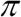，p和q。进行如下掷硬币试验：先掷硬币A，根据其结果选出硬币B或硬币C，正面选硬币B，反面选硬币C；然后掷选出的硬币，掷硬币的结果，出现正面记作1，出现反面记作0；独立地重复n次试验（这里，n＝10），观测结果如下：
1,1,0,1,0,0,1,0,1,1
假设只能观测到掷硬币的结果，不能观测掷硬币的过程。问如何估计三硬币正面出现的概率，即三硬币模型的参数。
解 三硬币模型可以写作
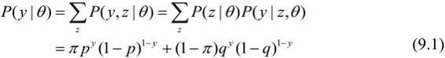
这里，随机变量y是观测变量，表示一次试验观测的结果是1或0；随机变量z是隐变量，表示未观测到的掷硬币A的结果；＝(,p，q)是模型参数。这一模型是以上数据的生成模型。注意，随机变量y的数据可以观测，随机变量z的数据不可观测。
将观测数据表示为Y＝(Y1，Y2,…,Yn)T，未观测数据表示为Z＝(Z1,Z2,…,Zn)T，则观测数据的似然函数为
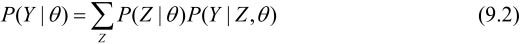
即
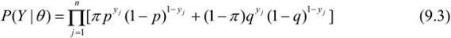
考虑求模型参数＝(,p,q)的极大似然估计，即
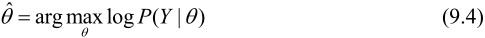
这个问题没有解析解，只有通过迭代的方法求解。EM算法就是可以用于求解这个问题的一种迭代算法。下面给出针对以上问题的EM算法，其推导过程省略。
EM算法首先选取参数的初值，记作(0)＝((0),p(0),q(0))，然后通过下面的步骤迭代计算参数的估计值，直至收敛为止。第i次迭代参数的估计值为(i)＝((i),p(i),q(i))。EM算法的第i+1次迭代如下。
E步：计算在模型参数(i)，p(i)，q(i)下观测数据yj来自掷硬币B的概率
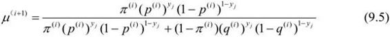
M步：计算模型参数的新估计值
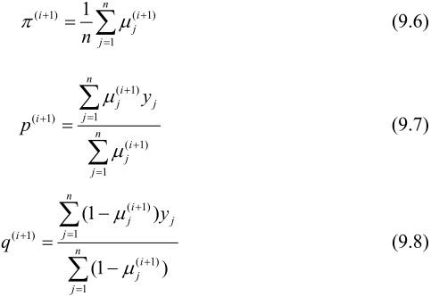
进行数字计算。假设模型参数的初值取为
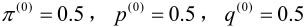
由式（9.5），对yj＝1与yj＝0均有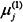＝0.5。
利用迭代公式（9.6）～（9.8），得到
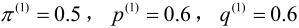
由式（9.5），
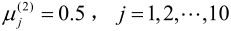
继续迭代，得
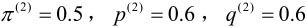
于是得到模型参数的极大似然估计：
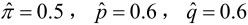
＝0.5表示硬币A是均匀的，这一结果容易理解。
如果取初值(0)＝0.4，p(0)＝0.6，q(0)＝0.7，那么得到的模型参数的极大似然估计是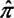＝0.4064， ＝0.5368，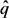＝0.6432。这就是说，EM算法与初值的选择有关，选择不同的初值可能得到不同的参数估计值。
＝0.5368，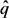＝0.6432。这就是说，EM算法与初值的选择有关，选择不同的初值可能得到不同的参数估计值。
一般地，用Y表示观测随机变量的数据，Z表示隐随机变量的数据。Y和Z连在一起称为完全数据（complete-data），观测数据Y又称为不完全数据（incomplete-data）。假设给定观测数据Y，其概率分布是P(Y|)，其中是需要估计的模型参数，那么不完全数据Y的似然函数是P(Y|)，对数似然函数L()＝logP(Y|)；假设Y和Z的联合概率分布是P(Y，Z|)，那么完全数据的对数似然函数是logP(Y，Z|)。
EM算法通过迭代求L()＝logP(Y|)的极大似然估计。每次迭代包含两步：E步，求期望；M步，求极大化。下面来介绍EM算法。
算法9.1（EM算法）
输入：观测变量数据Y，隐变量数据Z，联合分布P(Y，Z|)，条件分布P(Z|Y,)；
输出：模型参数。
（1）选择参数的初值(0)，开始迭代；
（2）E步：记(i)为第i次迭代参数的估计值，在第i+1次迭代的E步，计算
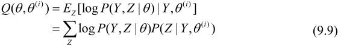
这里，P(Z|Y,(i))是在给定观测数据Y和当前的参数估计(i)下隐变量数据Z的条件概率分布；
（3） M步：求使Q(,(i))极大化的，确定第i+1次迭代的参数的估计值(i+1)
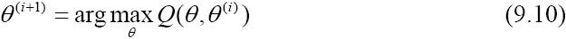
（4）重复第（2）步和第（3）步，直到收敛。
式（9.9）的函数Q(,(i))是EM算法的核心，称为Q函数（Q function）。
定义9.1（Q函数） 完全数据的对数似然函数logP(Y，Z|)关于在给定观测数据Y和当前参数(i)下对未观测数据Z的条件概率分布P(Z|Y,(i))的期望称为Q函数，即
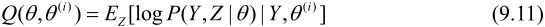
下面关于EM算法作几点说明：
步骤（1） 参数的初值可以任意选择，但需注意EM算法对初值是敏感的。
步骤（2） E步求Q(,(i))。Q函数式中Z是未观测数据，Y是观测数据。注意，Q(,(i))的第1个变元表示要极大化的参数，第2个变元表示参数的当前估计值。每次迭代实际在求Q函数及其极大。
步骤（3） M步求Q(,(i))的极大化，得到(i+1)，完成一次迭代(i)→(i+1)。后面将证明每次迭代使似然函数增大或达到局部极值。
步骤（4） 给出停止迭代的条件，一般是对较小的正数 1,2，若满足
1,2，若满足
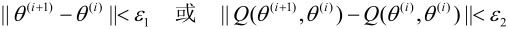
则停止迭代。
9.1.2 EM算法的导出
上面叙述了EM算法。为什么EM算法能近似实现对观测数据的极大似然估计呢？下面通过近似求解观测数据的对数似然函数的极大化问题来导出EM算法，由此可以清楚地看出EM算法的作用。
我们面对一个含有隐变量的概率模型，目标是极大化观测数据（不完全数据）Y关于参数的对数似然函数，即极大化
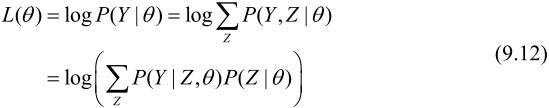
注意到这一极大化的主要困难是式（9.12）中有未观测数据并有包含和（或积分）的对数。
事实上，EM算法是通过迭代逐步近似极大化L()的。假设在第i次迭代后的估计值是(i)。我们希望新估计值能使L()增加，即L()>L((i))，并逐步达到极大值。为此，考虑两者的差：
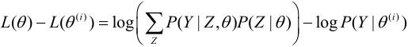
利用Jensen不等式（Jensen inequality）得到其下界：
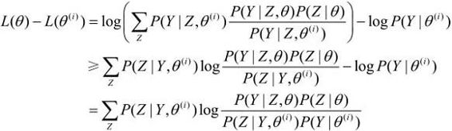
令
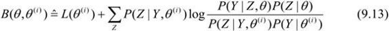
则
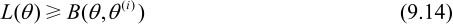
即函数B(,(i))是L()的一个下界，而且由式（9.13）可知，
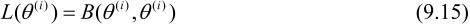
因此，任何可以使B(,(i))增大的，也可以使L()增大。为了使L()有尽可能大的增长，选择(i+1)使B(,(i))达到极大，即
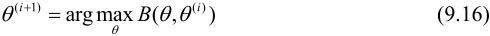
现在求(i+1)的表达式。省去对的极大化而言是常数的项，由式（9.16）、式（9.13）及式（9.10），有
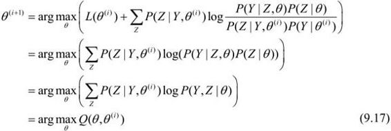
式（9.17）等价于EM算法的一次迭代，即求Q函数及其极大化。EM算法是通过不断求解下界的极大化逼近求解对数似然函数极大化的算法。
图9.1给出EM算法的直观解释。图中上方曲线为L()，下方曲线为B(,(i))。由式（9.14），B(,(i))为对数似然函数L()的下界。由式（9.15），两个函数在点＝(i)处相等。由式（9.16）和式（9.17），EM算法找到下一个点(i+1)使函数B(,(i))极大化，也使函数Q(,(i))极大化。这时由于L()≥B(,(i))，函数B(,(i))的增加，保证对数似然函数L()在每次迭代中也是增加的。EM算法在点(i+1)重新计算Q函数值，进行下一次迭代。在这个过程中，对数似然函数L()不断增大。从图可以推断出EM算法不能保证找到全局最优值。
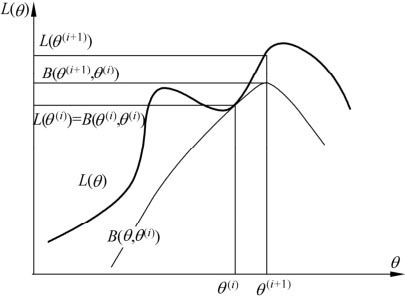
图9.1 EM算法的解释
9.1.3 EM算法在非监督学习中的应用
监督学习是由训练数据{(x1，y1),(x2，y2),…,(xN,yN)}学习条件概率分布P(Y|X)或决策函数Y＝f(X)作为模型，用于分类、回归、标注等任务。这时训练数据中的每个样本点由输入和输出对组成。
有时训练数据只有输入没有对应的输出{(x1,·),(x2,·),…,(xN,·)}，从这样的数据学习模型称为非监督学习问题。EM算法可以用于生成模型的非监督学习。生成模型由联合概率分布P(X,Y)表示，可以认为非监督学习训练数据是联合概率分布产生的数据。X为观测数据，Y为未观测数据。
9.2 EM算法的收敛性
EM算法提供一种近似计算含有隐变量概率模型的极大似然估计的方法。EM算法的最大优点是简单性和普适性。我们很自然地要问：EM算法得到的估计序列是否收敛？如果收敛，是否收敛到全局最大值或局部极大值？下面给出关于EM算法收敛性的两个定理。
定理9.1 设P(Y|)为观测数据的似然函数，(i)（i＝1,2,…）为EM算法得到的参数估计序列，P(Y|(i))（i＝1,2,…）为对应的似然函数序列，则P(Y|(i))是单调递增的，即
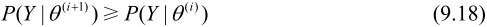
证明 由于
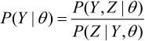
取对数有
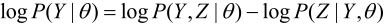
由式（9.11）
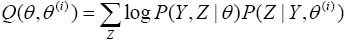
令
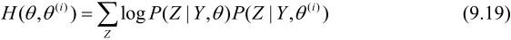
于是对数似然函数可以写成
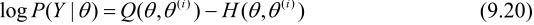
在式（9.20）中分别取为(i)和(i+1)并相减，有
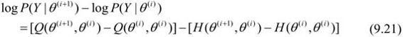
为证式（9.18），只需证式（9.21）右端是非负的。式（9.21）右端的第1项，由于(i+1)使Q(,(i))达到极大，所以有
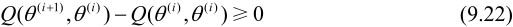
其第2项，由式（9.19）可得：
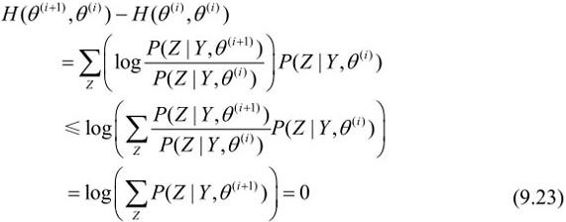
这里的不等号由Jensen不等式得到。
由式（9.22）和式（9.23）即知式（9.21）右端是非负的。
定理9.2 设L()＝logP(Y|)为观测数据的对数似然函数，(i)(i＝1,2,…)为EM算法得到的参数估计序列，L((i))(i＝1,2,…)为对应的对数似然函数序列。
（1）如果P(Y|)有上界，则L((i))＝logP(Y|(i))收敛到某一值L*；
（2）在函数Q(,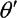)与L()满足一定条件下，由EM算法得到的参数估计序列(i)的收敛值*是L()的稳定点。
证明 （1）由L()＝logP(Y|(i))的单调性及P(Y|)的有界性立即得到。
（2）证明从略，参阅文献［6］。
定理9.2关于函数Q(,)与L()的条件在大多数情况下都是满足的。EM算法的收敛性包含关于对数似然函数序列L((i))的收敛性和关于参数估计序列(i)的收敛性两层意思，前者并不蕴涵后者。此外，定理只能保证参数估计序列收敛到对数似然函数序列的稳定点，不能保证收敛到极大值点。所以在应用中，初值的选择变得非常重要，常用的办法是选取几个不同的初值进行迭代，然后对得到的各个估计值加以比较，从中选择最好的。
9.3 EM算法在高斯混合模型学习中的应用
EM算法的一个重要应用是高斯混合模型的参数估计。高斯混合模型应用广泛，在许多情况下，EM算法是学习高斯混合模型（Gaussian misture model）的有效方法。
9.3.1 高斯混合模型
定义9.2（高斯混合模型） 高斯混合模型是指具有如下形式的概率分布模型：
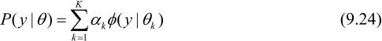
其中，ak是系数，ak≥0，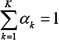；Ø(y|k)是高斯分布密度，k＝( k,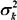)，
k,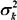)，
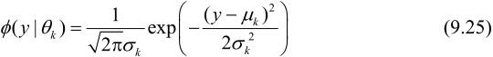
称为第k个分模型。
一般混合模型可以由任意概率分布密度代替式（9.25）中的高斯分布密度，我们只介绍最常用的高斯混合模型。
9.3.2 高斯混合模型参数估计的EM算法
假设观测数据y1,y2,…yN,由高斯混合模型生成，
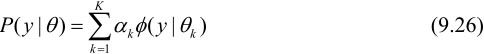
其中，＝(a1,a2,…,ak;1,2,…,k)。我们用EM算法估计高斯混合模型的参数。
1．明确隐变量，写出完全数据的对数似然函数
可以设想观测数据yj，j＝1,2,…,N，是这样产生的：首先依概率ak选择第k个高斯分布分模型Ø(y|k)；然后依第k个分模型的概率分布Ø(y|k)生成观测数据yj。这时观测数据yj，j＝1,2,…,N，是已知的；反映观测数据yj来自第k个分模型的数据是未知的，k＝1,2,…,K，以隐变量 jk表示，其定义如下：
jk表示，其定义如下：
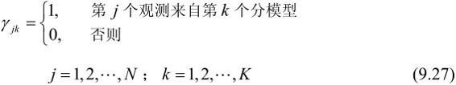
jk是0-1随机变量。
有了观测数据yj及未观测数据jk，那么完全数据是
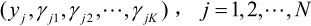
于是，可以写出完全数据的似然函数：
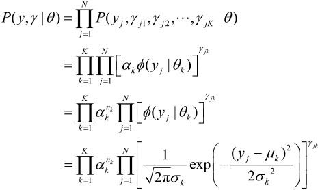
式中，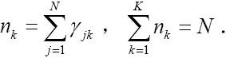
那么，完全数据的对数似然函数为
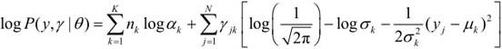
2．EM算法的E步：确定Q函数
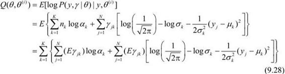
这里需要计算E(jk|y,)，记为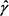jk。
jk是在当前模型参数下第j个观测数据来自第k个分模型的概率，称为分模型k对观测数据yj的响应度。
将jk＝Ejk及代入式（9.28）即得
3．确定EM算法的M步
迭代的M步是求函数Q(,(i))对的极大值，即求新一轮迭代的模型参数：
用k，及k，k＝1,2,…,K，表示(i+1)的各参数。求k，只需将式（9.29）分别对k，求偏导数并令其为0，即可得到；求k是在条件下求偏导数并令其为0得到的。结果如下：
重复以上计算，直到对数似然函数值不再有明显的变化为止。
现将估计高斯混合模型参数的EM算法总结如下：
算法9.2（高斯混合模型参数估计的EM算法）
输入：观测数据y1,y2,…,yN，高斯混合模型；
输出：高斯混合模型参数。
（1）取参数的初始值开始迭代
（2）E步：依据当前模型参数，计算分模型k对观测数据yj的响应度
（3）M步：计算新一轮迭代的模型参数
（4）重复第（2）步和第（3）步，直到收敛。
9.4 EM算法的推广
EM算法还可以解释为F函数（F function）的极大-极大算法（maximizationmaximization algorithm），基于这个解释有若干变形与推广，如广义期望极大（generalized expectation maximization，GEM）算法。下面予以介绍。
9.4.1 F函数的极大-极大算法
首先引进F函数并讨论其性质。
定义9.3（F函数） 假设隐变量数据Z的概率分布为 (Z)，定义分布与参数的函数F(,)如下：
(Z)，定义分布与参数的函数F(,)如下：
称为F函数。式中H()＝-Elog(Z)是分布(Z)的熵。
在定义9.3中，通常假设P(Y，Z|)是的连续函数，因而F(,)是和的连续函数。函数F(,)还有以下重要性质：
引理9.1 对于固定的，存在唯一的分布极大化F(,)，这时由下式给出：
并且随连续变化。
证明 对于固定的，可以求得使F(,)达到极大的分布(Z)。为此，引进拉格朗日乘子 ，拉格朗日函数为
，拉格朗日函数为
将其对求偏导数：

令偏导数等于0，得出
由此推出(Z)与P(Y，Z|)成比例
再从约束条件 得式（9.34）。
得式（9.34）。
由假设P(Y，Z|)是的连续函数，得到是的连续函数。
引理9.2 若(Z)＝P(Z|Y,)，则
证明作为习题，留给读者。
由以上引理，可以得到关于EM算法用F函数的极大-极大算法的解释。
定理9.3 设L()＝logP(Y|)为观测数据的对数似然函数，(i)，i＝1,2,…，为EM算法得到的参数估计序列，函数F(,)由式（9.33）定义。如果F(,)在*和*有局部极大值，那么L()也在*有局部极大值。类似地，如果F(,)在*和*达到全局最大值，那么L()也在*达到全局最大值。
证明 由引理9.1和引理9.2可知，L()＝logP(Y|)＝F(,)对任意成立。特别地，对于使F(,)达到极大的参数*，有
为了证明*是L()的极大点，需要证明不存在接近*的点**，使L(**)>L(*)。假如存在这样的点**，那么应有F(**,**)>F(*,*)，这里**＝**。但因是随连续变化的，**应接近*，这与*和*是F(,)的局部极大点的假设矛盾。
类似可以证明关于全局最大值的结论。
定理9.4 EM算法的一次迭代可由F函数的极大-极大算法实现。
设(i)为第i次迭代参数的估计，(i)为第i次迭代函数的估计。在第i+1次迭代的两步为
（1）对固定的(i)，求(i+1)使F(,(i))极大化；
（2）对固定的(i+1)，求(i+1)使F((i+1),)极大化。
证明 （1）由引理9.1，对于固定的(i)，
使F(,(i))极大化。此时，
由Q(,(i))的定义式（9.11）有
（2）固定(i+1)，求(i+1)使F((i+1),)极大化。得到
通过以上两步完成了EM算法的一次迭代。由此可知，由EM算法与F函数的极大-极大算法得到的参数估计序列(i)，i＝1,2,…，是一致的。
这样，就有EM算法的推广。
9.4.2 GEM算法
算法9.3（GEM算法1）
输入：观测数据，F函数；
输出：模型参数。
（1）初始化参数(0)，开始迭代
（2）第i+1次迭代，第1步：记(i)为参数的估计值，(i)为函数的估计。求(i+1)使极大化F(,(i))
（3）第2步：求(i+1)使F((i+1),)极大化
（4）重复（2）和（3），直到收敛。
在GEM算法1中，有时求Q(,(i))的极大化是很困难的。下面介绍的GEM算法2和GEM算法3并不是直接求(i+1)使Q(,(i))达到极大的，而是找一个(i+1)使得Q((i+1),(i))>Q((i),(i))。
算法9.4（GEM算法2）
输入：观测数据，Q函数；
输出：模型参数。
（1）初始化参数(0)，开始迭代
（2）第i+1次迭代，第1步：记(i)为参数的估计值，计算
（3）第2步：求(i+1)使
（4）重复（2）和（3），直到收敛。
当参数的维数为d（d≥2）时，可采用一种特殊的GEM算法，它将EM算法的M步分解为d次条件极大化，每次只改变参数向量的一个分量，其余分量不改变。
算法9.5（GEM算法3）
输入：观测数据，Q函数；
输出：模型参数。
（1）初始化参数(0)＝(,,…,)，开始迭代
（2）第i+1次迭代，第1步：记(i)＝(,,…,)为参数＝(1,2,…,d)的估计值，计算
（3）第2步：进行d次条件极大化：
首先，在,…,保持不变的条件下求使Q(,(i))达到极大的；
然后，在1＝，j＝，j＝3,4,…,k的条件下求使Q(,(i))达到极大的；
如此继续，经过d次条件极大化，得到(i+1)＝(,,…,)使得
（4）重复（2）和（3），直到收敛。
本章概要
1．EM算法是含有隐变量的概率模型极大似然估计或极大后验概率估计的迭代算法。含有隐变量的概率模型的数据表示为P(Y，Z|)。这里，Y是观测变量的数据，Z是隐变量的数据，是模型参数。EM算法通过迭代求解观测数据的对数似然函数L()＝logP(Y|)的极大化，实现极大似然估计。每次迭代包括两步：E步，求期望，即求logP(Y，Z|)关于P(Z|Y,(i))的期望：
称为Q函数，这里(i)是参数的现估计值；M步，求极大，即极大化Q函数得到参数的新估计值：
在构建具体的EM算法时，重要的是定义Q函数。每次迭代中，EM算法通过极大化Q函数来增大对数似然函数L()。
2．EM算法在每次迭代后均提高观测数据的似然函数值，即
在一般条件下EM算法是收敛的，但不能保证收敛到全局最优。
3．EM算法应用极其广泛，主要应用于含有隐变量的概率模型的学习。高斯混合模型的参数估计是EM算法的一个重要应用，下一章将要介绍的隐马尔可夫模型的非监督学习也是EM算法的一个重要应用。
4．EM算法还可以解释为F函数的极大-极大算法。EM算法有许多变形，如GEM算法。GEM算法的特点是每次迭代增加F函数值（并不一定是极大化F函数），从而增加似然函数值。
继续阅读
EM算法由Dempster等人总结提出[1]。类似的算法之前已被提出，如Baum与Welch算法，但是都没有EM算法那么广泛。EM算法的介绍可参见文献[2～4]。EM算法收敛性定理的有关证明见文献[5]。GEM是由Neal与Hinton提出的[6]。
习题
9.1 如例9.1的三硬币模型。假设观测数据不变，试选择不同的初值，例如，(0)＝0.46，p(0)＝0.55，q(0)＝0.67，求模型参数＝(,p,q)的极大似然估计。
9.2 证明引理9.2。
9.3 已知观测数据
–67，–48，6，8，14，16，23，24，28，29，41，49，56，60，75
试估计两个分量的高斯混合模型的5个参数。
9.4 EM算法可以用到朴素贝叶斯法的非监督学习。试写出其算法。
参考文献
[1] Dempster AP,Laird NM,Rubin DB. Maximum-likelihood from incomplete data via the EM algorithm. J. Royal Statist. Soc. Ser. B.,1977，39
[2] Hastie T,Tibshirani R,Friedman J. The Elements of Statistical Learning: Data Mining,Inference,and Prediction. Springer-Verlag,2001（中译本：统计学习基础——数据挖掘、推理与预测。范明，柴玉梅，昝红英等译。北京：电子工业出版社，2004）
[3] McLachlan G,Krishnan T. The EM Algorithm and Extensions. New York: John Wiley & Sons,1996
[4] 茆诗松，王静龙，濮晓龙。高等数理统计。北京：高等教育出版社；海登堡：斯普林格出版社，1998
[5] Wu CFJ. On the convergence properties of the EM algorithm. The Annals of Statistics,1983,11: 95–103
[6] Radford N,Geoffrey H,Jordan MI. A view of the EM algorithm that justifies incremental,sparse,and other variants. In: Learning in Graphical Models. Cambridge,MA: MIT Press,1999,355–368